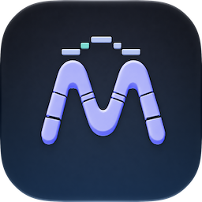

MorsettoMidi
MorsettoMidi processes notes and expression messages inside a compatible music host. A receiving instrument turns those messages into sound.
Open the offline user manual
Open the MorsettoMidi app and choose User Manual for the complete control reference. The guide is bundled with the app and works offline. On Mac it opens in a separate resizable window; Help → MorsettoMidi Help or Command-? opens the same guide. On iPhone and iPad it opens in a sheet; choose Done to close it.
Contact
For help, email Luca Cipressi · Milletgrain at lucaji.milletgrain@gmail.com .
Please include:
- your device model and operating-system version;
- the MorsettoMidi version and build number;
- the host name and version, receiving instrument and selected patch;
- the MIDI input, output and channel routing;
- whether you use Sustain or Retrigger, and the expression destination;
- the steps that reproduce the problem, including sustain-pedal use if relevant.
A screenshot of the routing can help. Remove personal information, and only share projects or recordings you have permission to send. Support never needs your App Store password.
Connect your first instrument
- Load MorsettoMidi in a host that supports AUv3 MIDI processors and supplies musical timing.
- Route a keyboard or host MIDI track into MorsettoMidi.
- Route its MIDI output to a receiving instrument and enable that instrument’s audio output.
- Select a patch that responds to CC11 Expression for the default setup.
- Start the host transport and play or hold notes.
The initial free pattern is MORSE, using expression to shape incoming sustained notes. MorsettoMidi does not contain the instrument that produces the sound. Use the host to record the result. The accompanying app provides version information, the offline manual and Pro purchase/restoration, and can stay closed while you play.
Free, Pro and restoring a purchase
Free · MORSE gives you unlimited use of the canonical MORSE phrase, original spacing and full natural loop. Articulation, velocity/expression mappings, shaping, subdivision/triplets, automation, grid/zoom navigation and host saving remain available.
Pro unlocks custom text, character spacing, leading silence and loop authoring through a permanent one-time purchase. It is separate from MorsettoAudio Pro.
- Open the MorsettoMidi app and choose Get Pro or Manage Pro. In the purchase sheet, buy Pro or choose Restore Purchases with the App Store account that purchased it. Restoration may ask you to sign in.
- Check both the verified-purchase status and any sharing message. Use Retry if the app reports that access could not be shared.
- Return to the plug-in and choose its Free / Pro status button to refresh shared access, or close and reopen its editor.
The status button only reads the access shared by the app. Pending approval leaves Free available, and an unavailable price does not prevent restoring an existing purchase. Contact support with the exact app and plug-in messages if access does not update.
While Free, Unlock all features from the app requests the companion app. When the app receives that link on iPhone or iPad, it presents the purchase sheet. If the link cannot open it, open MorsettoMidi yourself. Opening the app does not start a purchase. Loop and Grid → Letter menus remain available to inspect in Free, with their Pro editing actions locked.
A Pro project opened while Free plays MORSE but keeps its authored text, spacing and loop. Free timing/mapping edits and re-saving preserve that material. Restoring access brings it back; restoring a purchase does not recover deleted projects or presets.
My host does not show a MIDI effect
Support for AUv3 audio effects does not necessarily include AUv3 MIDI processors or their output routing. Check your host’s documentation for its MIDI-effect workflow. On Mac, follow its Audio Unit rescan procedure if necessary.
The AUv3 version cannot be loaded through a VST-only route. The current system baseline is iOS/iPadOS 18 or later and macOS 15 or later. A host/routing compatibility list will be added before release. Do not assume MIDI-processor compatibility from OS support or the host’s audio-effect menu alone.
Ableton’s routing guide describes a VST workflow and lists AU MIDI output as unavailable in Live. MorsettoMidi currently supplies AUv3 only, with no VST edition. AU hosts that support MIDI-processor routing can use Apple’s AU MIDI-output APIs ; AU discovery alone does not establish that a host provides the required route.
There is no sound
Test the receiving instrument with the same MIDI source routed directly to it. If that works, restore the route through MorsettoMidi and check the input/output channels, host transport and plug-in bypass state.
In Retrigger, newly played notes wait for the next Morse attack. A loop with long gaps can delay the first note; a loop containing no marks will not provide retrigger attacks.
Check each active mapping’s range, Scaling and Depth. Some instruments interpret a controller value of zero as silence. Disable continuous mappings temporarily to separate note-routing problems from controller-response problems.
Notes play but the pattern has no effect
Ensure that the host is playing and the free MORSE pattern is active, or your Pro text has been accepted with Apply Phrase. The plug-in needs host tempo, beat position and moving transport; notes or MIDI clock alone do not start the rhythm.
For Sustain, enable a continuous mapping to a destination that your instrument responds to. With all continuous mappings disabled, sustained notes have no rhythmic expression treatment.
For Retrigger, use the dedicated articulation selector and hold notes across the pattern. Turning off every mapping still allows Retrigger to articulate notes. Select Sustain with all mappings disabled to pass played notes without rhythmic treatment. The playhead can still move in that configuration.
Sustain and Retrigger behave differently
Sustain: notes follow your playing without waiting for the next Morse attack, and remain held according to keys and sustain pedal. Continuous expression supplies the rhythmic movement without repeatedly starting the instrument’s attack. An initial note can briefly wait while the plug-in establishes controller values at the destination.
Retrigger: eligible held notes start at Morse attacks. New notes wait for the next attack, and sustain-pedal holding can keep them eligible after you release the keys. Each mark stays a distinct retrigger, even when marks touch or the loop contains one dot. Attack duration and offset can move a note’s start before the visible mark boundary.
Changing notes or chords does not restart the phrase. The rhythm continues at the current host position.
Velocity and output channel
Select the Velocity tab to choose Played velocity or Fixed velocity, a response curve and the output channel. Fixed supplies the velocity for incoming notes when the mapping is active; pitches still come from your keyboard or MIDI track.
Output can preserve incoming channels or use the selected channel. This setting applies independently of whether the Velocity mapping is active.
Understand the mapping tabs
Five permanent tabs hold Velocity and four continuous mappings. Selecting a tab changes its detail controls and pattern overlay; Active Mapping enables or disables that slot. All other active mappings keep processing. Disabled slots keep their settings and remain editable.
Each continuous mapping chooses Morse Envelope, Dots only, Dashes only or Loop Ramp. The four default destinations are CC11 Expression, CC1 Modulation, CC74 Brightness and CC7 Channel Volume. Only CC11 starts active, with Scale Input; the others begin inactive with Absolute Range.
Choose an expression destination
Select a continuous mapping tab and choose a controller or Polyphonic Pressure. Drag its range graph endpoints, or use their accessibility adjustments. Invert reverses direction; Reset Range restores the endpoints only.
Named shortcuts provide CC1 Modulation, CC7 Channel Volume, CC10 Pan, CC11 Expression and CC74 Brightness. The grouped controller menu offers other assignable 7-bit CC numbers. Choose a destination the receiving instrument and patch implement; a controller name does not guarantee a particular audible result.
Controller selections apply directly while preserving the mapping’s source, range, inversion and Scaling. Active controller destinations must be distinct, and only one pressure mapping can be active. Conflicting choices are rejected with feedback.
Sustain, switch, bank-selection, channel-mode and certain other special-purpose controllers are reserved and do not appear as assignable destinations. One expression route controls one CC at a time; choosing a fine-controller number does not enable paired 14-bit output.
Controller routes act across an output channel. Polyphonic pressure addresses individual notes, subject to instrument support. Full MPE is not part of the first release; output is MIDI 1.0.
Scaling and controller restoration
Absolute Range reaches the authored range at full Depth. At lower Depth, the result blends from the latest incoming value, or a destination-specific fallback when no input value is known.
Scale Input, the initial CC11 setting, multiplies the incoming baseline by the mapped expression amount. A low incoming value can reduce the result; a received zero is meaningful. Before a value is received, the scaling reference is 127. The range graph represents the authored range; Depth and incoming values can change the emitted result.
When a CC mapping releases its destination, it automatically restores the latest incoming value. If none has arrived, the fallback is 127 for CC7/CC11, 64 for CC8/CC10/CC74, and 0 for other assignable controllers. These are Morsetto defaults, not universal neutral settings for every instrument. Restoration bypasses range, inversion, Depth and Scaling. Rhythmic gaps keep control of the destination while eligible notes remain; incoming controller-reset messages clear remembered input values.
Polyphonic pressure follows each note’s received pressure and uses per-note cleanup rather than CC-style restoration. Its input reference starts at 127 until observed.
Velocity and expression are separate
The Velocity mapping offers Linear, Lift soft notes, and Emphasize strong notes curves. Disabling it preserves incoming note-on velocities, even when Fixed velocity was selected.
With continuous mappings active, the envelope does not also multiply the initial velocity. When all continuous mappings are disabled and Velocity remains active, Balance and Depth can shape Retrigger velocity. Attack, Release and their offsets also define Retrigger note windows; they do not extend the lifetime of an incoming Sustain note.
The six Shape controls are Balance, Attack, A. Offset, Release, R. Offset and Depth. Reshape Overlaps shortens overlapping Morse fades when needed. Loop Ramp ignores the Morse fades and Balance. Controls without a role in the current routing retain their values while editor adjustment is disabled.
Periodic modulation updates use 7-bit values and run at up to 200 Hz, with unchanged values omitted. Polyphonic Pressure can also update when notes start, incoming pressure changes or controllers reset, so this is not an overall pressure-message limit. Very short fades can sound stepped; the receiving instrument’s smoothing also affects the result.
Channels and notes that keep sounding
Output can preserve input channels or use a selected channel. If identical pitches from several input channels are merged onto one output channel, MIDI 1.0 cannot keep their release ownership fully separate.
Release the keys and sustain pedal, then stop the host. If notes continue after the host has suspended the plug-in, use the host or instrument’s Panic / All Notes Off facility. Report the route and exact stop or bypass sequence to support.
Stopping transport or losing host timing releases Morsetto-owned notes without restarting the previously held chord. Fresh notes played while inactive pass through. Explicitly entering bypass forwards held input notes; resumed processing follows the current host position.
Morsetto retries undelivered cleanup while the host continues rendering. If the host suspends processing before another render, use the host or instrument’s panic facility to stop any remaining notes.
Edit text, spacing and loops
Custom text, spacing and loops require Pro. Open Phrase, enter up to 20 supported characters after ordinary spaces are removed, then choose Apply Phrase. Letters A–Z, É/é, digits and the following punctuation are supported:
. , : ? ' - / ( ) " = + × @Spaces do not add word gaps. Invalid text leaves the accepted pattern unchanged; Revert restores the accepted text. Timing and mapping adjustments do not apply an unfinished text draft. Replacing text asks before discarding custom spacing or an explicit loop.
Both tiers offer Morse-unit durations of 1/64, 1/32, 1/16, 1/8, 1/4, 1/2 or a whole note, with optional triplets.
Move the first character, or drag the leading-silence region, to shift the complete phrase while preserving its gaps. Move later characters independently without changing their internal marks.
Choose Morse Ticks, Host Transport, both or None. With Snap to grid enabled, moves follow the displayed grid; with both shown, the nearest is used. None allows free placement while retaining the Snap preference. Grid or Snap changes never reposition existing content. Before meter information arrives, host snapping uses a quarter-note reference.
Set either loop boundary to choose the repeating region. Extending past the phrase adds silence, and boundaries may cut through marks or gaps. Drag the labelled duration strip to move the complete loop without changing its length or the phrase positions.
Boundary resizing requires at least one host denominator-note beat: a quarter note in 4/4 or an eighth note in 6/8. Before meter information arrives, a labelled provisional quarter-note minimum applies. Natural and restored loops can be shorter, and moving a whole loop preserves its duration.
Undo/Redo work within the open editor. Reset spacing and loop removes leading silence and restores canonical spacing and natural phrase length. Replacing text or restoring host state clears editing history.
For precise edits, use Grid → Letter and the Loop menu. Beat/bar duration commands move to the next or previous duration boundary when the loop is off-grid, then apply the current snap setting. New instances use the Host Transport grid, Bars and Beats ruler and Snap to grid enabled. Ruler notation can be changed independently of timing or snapping.
On iPhone and iPad, Loop, Grid and character menus keep the snapping positions captured when opened while playback continues. Reopen a menu to use the latest grid. An authored pattern change invalidates its old editing commands. The app’s manual explains these controls and the Beats Only / Bars and Beats ruler options.
Timing and saved settings
The pattern follows host tempo and song position, repeating from host beat zero. Starting midway through a project can start midway through the pattern. Moving the loop start selects content without changing that timing origin; opening the editor does not restart playback.
Save accepted text, leading silence, spacing, loop, timing, articulation, all active and inactive mappings, velocity/channel settings, ranges, Scaling, overlap reshaping and grid/snap/ruler choices with the host’s project or Audio Unit presets. Draft text, selected tab, zoom, drag previews and Undo history are temporary. The six Shape controls support host automation; authored patterns and patch settings do not add automation parameters.
If Settings could not be restored appears, the host supplied missing, invalid or unsupported saved content and the instance has kept its current settings. Unversioned development presets are unsupported. Avoid saving over the original project or preset; reopen it with a compatible build or recover a backup. Dismissing the warning does not recover the rejected settings.
The stopped playhead retains the last valid host position. A seek made while the host is not sending observations becomes visible when it sends another update. Reopening the editor does not restart processing.
Privacy and audio processing
Read the Morsetto Privacy Policy for MIDI processing and saved host data.
Return to MorsettoMidi , or visit MorsettoAudio Support for help processing an audio signal.